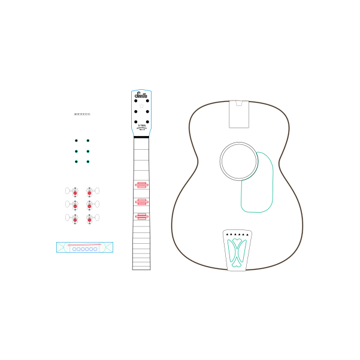
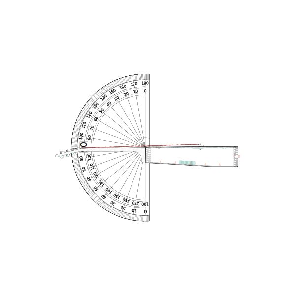
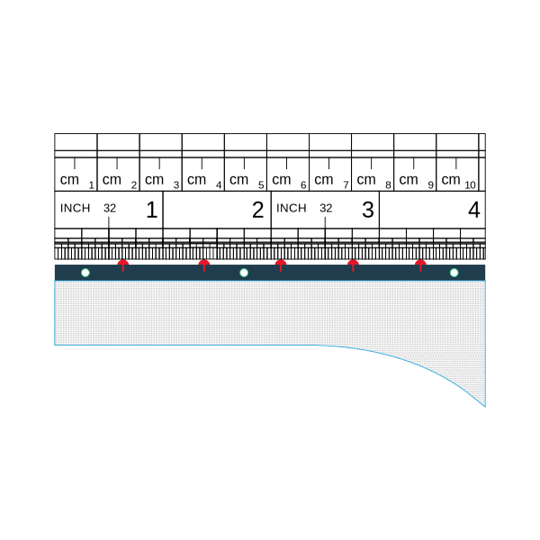
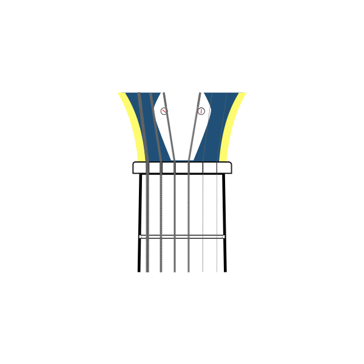
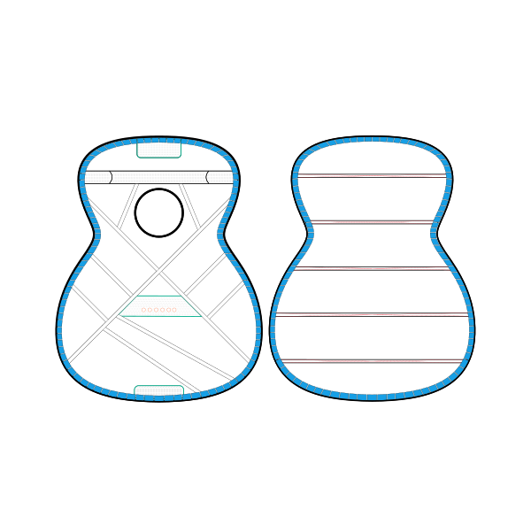
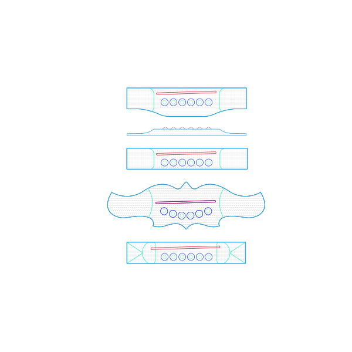
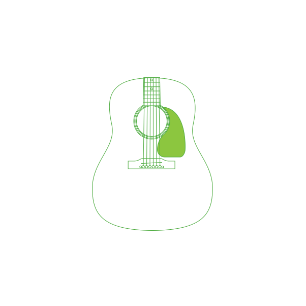

Disassembly:
Before we can work our engineering magic on your acoustic guitar we have to completely
disassemble it into it's component parts.
We carefully remove the neck and bridge, separate the back from the body, and remove all hardware and old braces.
We then inspect and remedy any structural problems.

Neck Reset:
Through years of string tension, the neck can pull up, the top can warp, and the dovetail
joint can slip: resulting in high playing action or impossible playability.
We remove the neck and clean out the dovetail, before setting a perfect neck angle and glueing back in place to
ensure further more years of life.

Refret:
A precise re-fret, built on-top of a level-planed fingerboard, greatly enhances playing
feel,
action, sustain, and intonation.
All frets are carefully leveled, crowned, sanded, and polished to a mirror finish as part of the Baxendale
Conversion process.

The Nut:
Making the perfect guitar nut, ensures optimum resonant transmission, acoustic coupling,
and
intonation. Each guitar that passes through has a hand carved nut.
Every bespoke nut is made to fit, ramps and guides are filed to be flat and true, and each guitar is expertly
tuned
for playability and function.

Bracing:
Our bracing pattern, inspired by pre-war models, increases headroom, richness and
projection.
Combined with vintage tone-woods, we create top shelf guitars at a fraction of the cost.
Each brace is meticulously hand carved, shaped and perfectly fit using the highest quality spruce stock we can
source.

The Bridge:
Here at Baxendale Conversions, we consider the bridge to be the engine of the guitar.
Converting energy supplied by your pick to project sound.
Every guitar that comes through our shop gets a bespoke hand carved bridge to match the style and footprint of the
original.

Tuning Gears:
Over more than 40 years, the tuning gears on vintage guitars tend to warp and bind together
leaving them stiff and unusable.
We replace all tuning gears with high end models as standard. Ensuring precision tuning and years of further use.
Green:
Guitar making accounts for a substantial amount of the lumber economy, older guitars are
made
from exotic wood, unobtainable in todays market.
Our guitars are constructed using the original neck and body woods, and we use minimal new wood for our
conversions.
We're proud to support environmental concerns.
